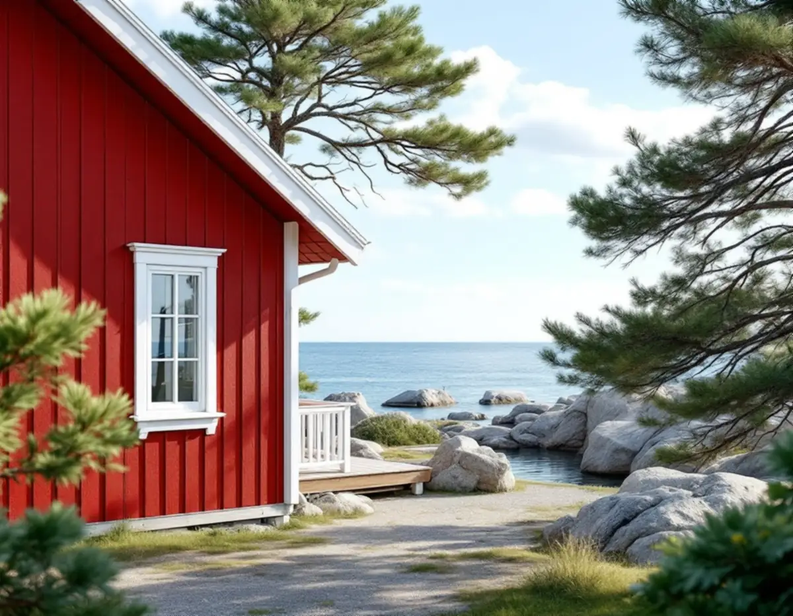
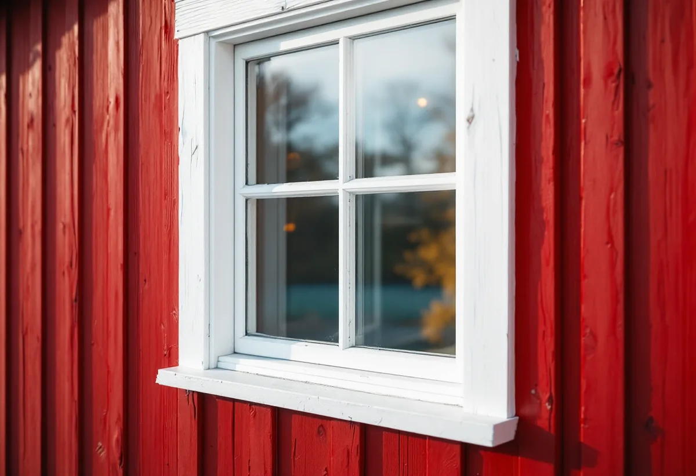

Bilder och första samtal
Är du inte på plats kan du skicka bilder på fasader och rum, så förbereder vi besöket.

En målare i Norrtälje arbetar ofta på hus där ägaren bara är på plats delar av året, eller där material måste fram med båt.
Beskriv jobbet kort.
Något blev fel. Kontrollera uppgifterna eller ring 08 12 410 276.
Vi tittar på jobbet på plats innan du får offert.
Du ser vad som ingår och vad det kostar.
Vi drar av ROT direkt och sköter ansökan.
Geal Entreprenad AB, Bromma. Org.nr 559303-7566.

På ett äldre trähus i Roslagen är frågan om färgtyp ofta viktigare än kulören. Vi målar fasader, fönster och interiörer i hela kommunen – i staden, i Rimbo och Hallstavik och längs kusten.
Norrtälje är enligt SCB Sveriges mest fritidshustäta kommun, med 27 352 fritidshus 2025. Många av dem används i dag långt utanför sommaren. Ett hus som byggdes för juni–augusti och nu värms upp året runt ställer andra krav både på fasaden och på rummen innanför.
Stadskärnan har ett bevarandeprogram som kommunfullmäktige fastställde 1981 och som kommunen sedan har uppdaterat, och den del som ligger inom riksintresset för kulturmiljövården ska bevaras och vårdas. Där är äldre trähus och gårdar en stor del av stadsbilden.
Utanför staden finns villaområden i Rimbo och Hallstavik och äldre kustbebyggelse, bland annat i Grisslehamn på Väddö.
Riksantikvarieämbetet beskriver i sin skrift om traditionellt måleri slamfärg som matt, fuktgenomsläpplig och enkel att stryka. Den fäster bra på ohyvlat virke men sämre på hyvlat, och den är enligt skriften den mest underhållsvänliga färgtypen: borsta av och måla om. Linoljefärg dominerade på trähus ända till mitten av 1900-talet där rödfärg inte användes.
På en gammal rödfärgad stuga är det därför sällan rätt att byta till en täckande plastfärg. Skriften varnar för att moderna färger över äldre typer ger en teknisk risk, och att man ofta inte kan gå tillbaka utan att ta bort all färg. Vi börjar med att ta reda på vad som sitter på väggen och om panelen är hyvlad eller sågad.
Ett byte av färgtyp kan också vara en lovfråga. Boverket skriver att en övergång från slamfärg till silikonhartsfärg inte räknas som kulörbyte, men att den kan påverka byggnadens yttre karaktärsdrag.
Enligt samma skrift bör utomhusmålning i Mellansverige göras under april–september, och trä som ska målas får inte ha högre fuktkvot än 15 procent. Med linoljefärg är maj–augusti bäst, och direkt solsken undviks eftersom ytan kan torka för fort och slå blåsor. Målaren följer solen och tar de fasader som redan har haft sol.
Ett hus på en udde eller i ett öppet läge mot havet får hårdare väder än en gård i skogen kring Rimbo. De mest utsatta delarna – fönster, vattbrädor, trappor, räcken och plåt – bör enligt Riksantikvarieämbetet underhållsmålas löpande, annars tar underlaget skada. Därför föreslår vi ofta att fönster och snickerier målas oftare än själva väggen.
Saknar fastigheten bilväg ända fram planerar vi transport av ställning, färg och avfall redan vid besöket.
Norrtälje kommun skriver på sin sida om fasadändring att byte av färg räknas som fasadändring. Inom detaljplan krävs lov för hus som inte är en- eller tvåbostadshus om fasaden vetter mot väg eller allmän plats, och för alla hus om detaljplanen har utökad lovplikt. Utanför detaljplan krävs lov om fastigheten ligger i ett särskilt värdefullt område. Enligt Boverket krävs lov också för särskilt värdefulla byggnader och där detaljplanen har skyddsbestämmelser.
Kommunens karta visar om fastigheten ligger inom detaljplan och i ett värdefullt område. Kommunen bedömer inte enskilda åtgärder per telefon eller e-post; vill du ha ett bindande besked kan du söka frivilligt lov. Gäller det en gård i stadskärnan är bevarandeprogrammet värt att läsa innan kulören bestäms. Att måla om i samma kulör räknas enligt Boverket normalt som underhåll.
När ett fritidshus permanentas kan det vara läge att måla rummen i samma veva som andra arbeten på huset. Inomhus kan man måla året runt så länge huset är uppvärmt, så det arbetet passar gärna under vinterhalvåret. Har stugan äldre linoljefärg på väggar eller snickerier är det bra att veta att den gulnar något med tiden, mest i mörka utrymmen.
Blir det fler arbeten än målning samordnar vi dem som en helhet – läs om villarenovering och om takarbeten hos takläggare i Norrtälje.
Är du inte på plats kan du skicka bilder på fasader och rum, så förbereder vi besöket.
Vi tittar på färgtyp, panel och träets skick och på hur ställning och material tar sig fram, även om det kräver båt.
Vi ser om fastigheten ligger inom detaljplan eller i ett särskilt värdefullt område.
Du får ett skriftligt förslag där transport, lagningar och målning står var för sig.
Utvändigt arbete läggs i den varma, torra delen av säsongen; rum kan göras under vintern.
Vi går igenom jobbet på plats eller med bilder och lämnar uppgift om färgtyp och kulör.
Rotavdraget gäller enligt Skatteverket även fritidshus och bostäder där du bara bor ibland, så länge du äger bostaden och du eller dina föräldrar helt eller delvis bor där. Avdraget är 30 procent av arbetskostnaden, högst 50 000 kronor per person och år (högst 75 000 kronor tillsammans med RUT). Färg, resor och transporter ger inget avdrag. Vi drar avdraget direkt på fakturan.
Avståndet och vägen fram påverkar mer här än i tätare kommuner: ska ställning och färg fraktas med båt eller bäras sista biten syns det i förslaget. Därtill kommer husets storlek, hur mycket gammal färg som måste tas bort och om panel eller fönsterbleck behöver lagas.
Platsbesöket är kostnadsfritt, och du får ett skriftligt kostnadsförslag innan något arbete startar.
Fasad, fönster och invändig målning.
Målare i Stockholm →Takbyte, takbesiktning och plåtarbeten.
Takläggare i Norrtälje →Roslagen, skärgård och fritidshus.
Takrenovering i Norrtälje →Stugtomter, strandskydd och avlopp.
Attefallshus i Norrtälje →Fritidshus, WC-tillstånd och brunn.
Badrumsrenovering i Norrtälje →Nytt hus, förhandsbesked och egen brunn.
Byggföretag i Norrtälje →Ljust bostadshus och röda uthus.
Fasadmålning i Norrtälje →Bruksvillor, sommarvillor och Roslagens trähus.
Fasadrenovering i Norrtälje →Roslagens hus, bruksorter och bidrag i Norrtälje.
Fönsterbyte i Norrtälje →Gårdar, timmerhus och lösa innerbågar i Roslagen.
Fönsterrenovering i Norrtälje →Plankgolv i gamla gårdar och parstugor.
Golvläggare i Norrtälje →Från slipat eller lackat golv till skurgolv.
Golvslipning i Norrtälje →Gasolspis, vedspis och pentry i gäststugan.
Köksrenovering i Norrtälje →Takskydd, rännor och skorstensplåt i Norrtälje.
Plåtslagare i Norrtälje →Kust, snö och Roslagens tak.
Takbyte i Norrtälje →Ny tapet i fritidshus och villor.
Tapetsering i Norrtälje →Tidigare tillbyggnader, strand och frivilligt lov.
Tillbyggnad i Norrtälje →Egen brunn och eget avlopp.
Totalrenovering i Norrtälje →Eller ring 08 12 410 276, mån–fre 08–17.
Beskriv jobbet kort.
Något blev fel. Kontrollera uppgifterna eller ring 08 12 410 276.